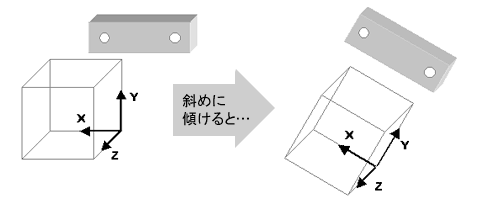
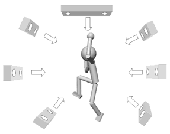
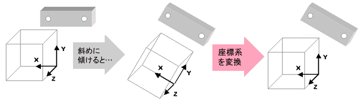
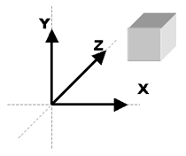
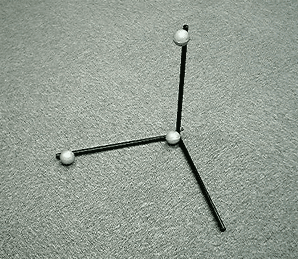
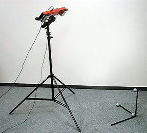
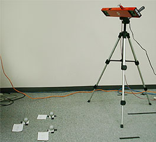
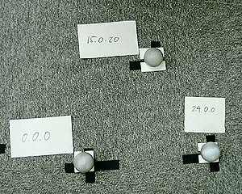

| 座標系変換 |
|
|
座標系変換とは
|
座標系の変換を行わない場合、ステレオラベリングカメラから生成される三次元座標系は、カメラから見た世界のものになります。つまり、カメラが斜めに傾いていれば認識される座標系も斜めに傾いたものになります。

従って、 カメラを求める座標系に合わせて正しく設置することが可能であれば座標系の変換は必要ありません。
しかし、実際にモーションキャプチャを行う場合、外乱やマーカ隠れ（オクルージョン）を避けてカメラを設置するので、位置や向きは様々になります。求める座標系にカメラの位置や向きを合わせることができない場合がほとんどです。

そこで、カメラをどのような位置、向きに設置しても、求める座標系に変える処理（座標系変換）が必要になります。

|
座標系変換を行うために
|
求める座標系をカメラ（システム）に教える必要があります。
本ソフトでは2種類の方法を用意しています。
XYZ座標のうち、いずれか２軸を見せる方法 あらかじめ座標値のわかっている３点を見せる方法
【１】直交 カメラには左手系座標系のXYZ軸のうちの２つの座標軸を教えます。左手系座標系とは以下のような座標系です。

３点のマーカを使ってXYZのうちの２軸を構成するように配置します。便宜上これを基準マーカと呼びます。基準マーカはできる限り
- ２軸は直角に保ち
- マーカ間の距離をとり
- 求める座標系に合うように
- カメラの画角内に収まるように
設置してください。また、以下の点に注意してください。
- ３つの基準マーカ以外にはマーカが認識されないようにしてください。
- 設置のしかたによっては３Ｄモニターフォーム上のマーカ色が安定しない場合（赤と青が頻繁に入れ替わる etc.）があります。その場合はカメラの設置や基準マーカの設置を調整してください。
基準マーカとその設置例を以下に示します。

カメラの設置位置が決まったら基準マーカを設置し、アプリケーション上で座標系変換設定ダイアログを使って座標系変換設定を行います。
設定フォームで「座標系変換−設定」ボタンを押し、 座標変換手法選択ダイアログで「直交」を選択すると座標系変換設定ダイアログ【直交】が開きます。
【２】既知３点 カメラには、左手系座標系にある座標値があらかじめわかっている３点を見せます。
この３点のマーカを便宜上基準マーカと呼びます。基準マーカはできる限り
- マーカ間の距離をとり
- ３点が１直線上に並ばないように
- カメラの画角内に収まるように
設置してください。また、以下の点に注意してください。
- ３つの基準マーカ以外にはマーカが認識されないようにしてください。
- 設置のしかたによっては３Ｄモニターフォーム上のマーカ色が安定しない場合（赤と青が頻繁に入れ替わる etc.）があります。その場合はカメラの設置や基準マーカの設置を調整してください。
基準マーカとその設置例を以下に示します。

カメラの設置位置が決まったら基準マーカを設置し、アプリケーション上で座標系変換設定ダイアログを使って座標系変換設定を行います。
設定フォームで「座標系変換−設定」ボタンを押し、 座標変換手法選択ダイアログで「直交」を選択すると座標系変換設定ダイアログ【既知３点】が開きます。
|
|
Copyright (C) 2001 CyVerse Corp.
|